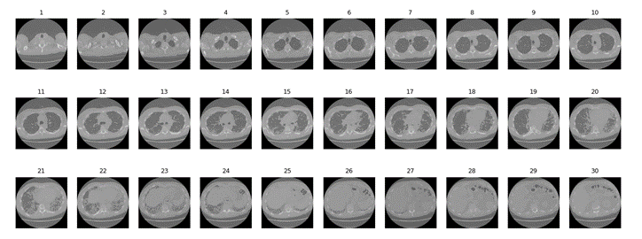

A comparison of image detection models
In this project, the performance of different object detection paradigms in thoracic lung tomography images is evaluated by identifying the lungs:
- Generate a dataset with computed tomography images of the chest for the application of lung detection.
- Preprocess images to obtain the format and size appropriate to the needs of the project.
- Label the respective classes of the objects that appear in the image, in this case a single class called: lung.
- Test dataset generated with YOLOv4 model.
- Test dataset generated with YOLOv5 model.
- Test dataset generated with Detectron 2 model.
- Test dataset generated with Tensorflow2 model.
- Obtain performance metrics of the object detection paradigms used.
For the training of the object detection models it is necessary to use specific structures that dictate how the labels and metadata are stored for an image data set, there are different types of formats, the most common are COCO JSON, YOLO and PASCALVOC. This project seeks to detect left and right lung within a computed tomography image, these images are originally generated in DICOM format (Digital Imaging and Communication In Medicine, for the purposes of this project the images were converted from dcm format (DICOM) to jpg (an image compression format). After the format conversion, an image was chosen from the set of images of each of the patient, that is, if the tomography study contained 30 slices or images, the image number equal to the median or the closest to that was chosen. value, in this case the image number 15, see the following illustration
Once the dataset with 173 images has been generated. These images were labeled with the LabelImg tool. The images were then uploaded to RoboFlow, a computer vision support platform, which allows tagging images in JSON, XML, CSV and TXT formats and sharing work remotely with teammates. The reason this tool was used is its option to perform data augmentation and image splitting for training, testing, and validation.
In addition, a 416x416 pixel resizing was performed and the images were rotated to generate more variety in the dataset. Finally, 381 images were generated. Taking care not to use images of the same patient in more than one of the sets, be it training, validation or testing. NOTE: the name of the lung class is 15 in order to avoid an overlap when printing the name of the class and the reliability of the detection performed.
Results:
AP obtained by each of the detection models used. Table shows the AP of the two models that could be trained correctly: YOLOv5 and Detectron2, of which the YOLOv5 network was the one that obtained the highest score for this metric.
AP obtained by each of the detection models used.